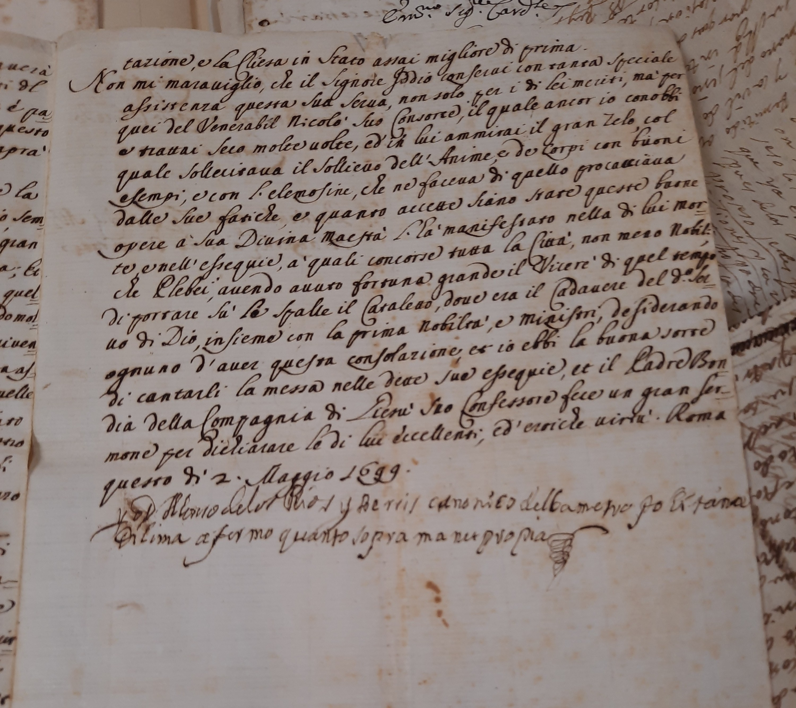
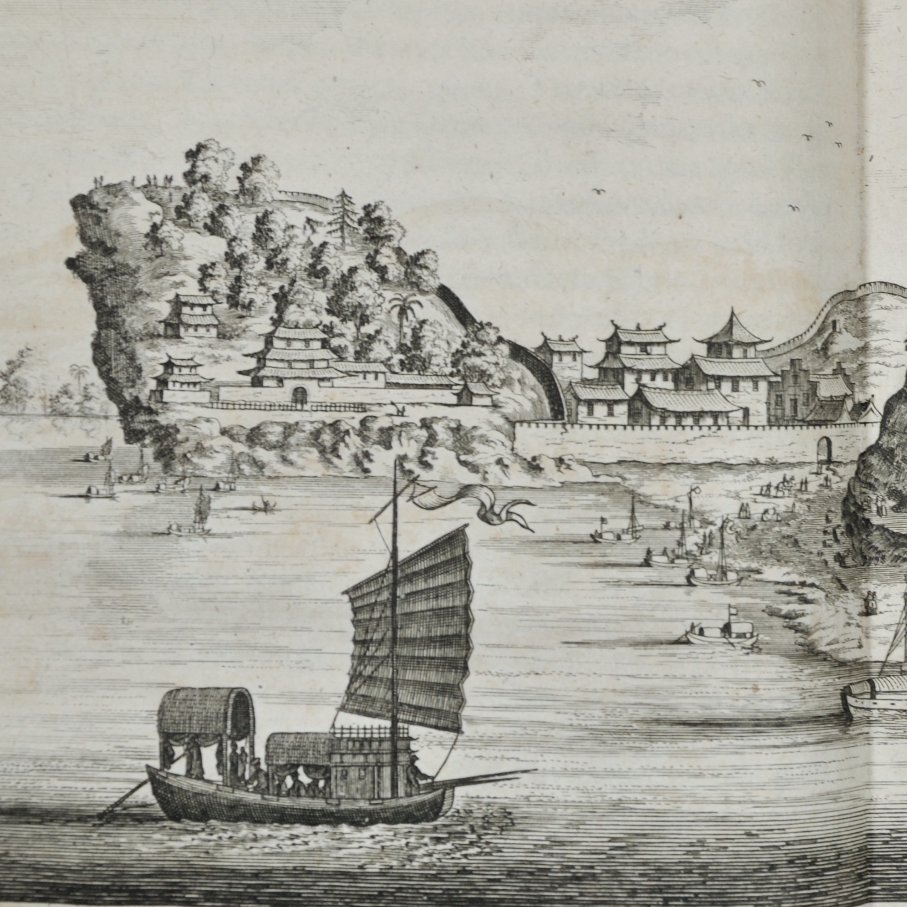
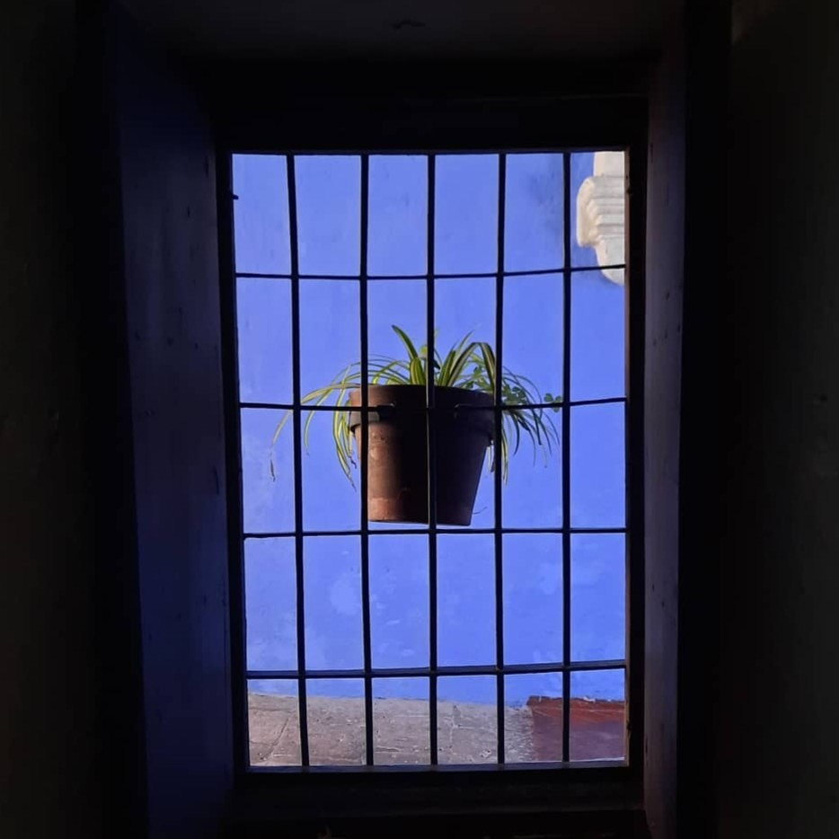

Inicio
|
Formación
|
Investigación
|
Publicaciones
|
Docencia
|
Investigación

Desarrollo del corpus digital del proyecto
Carter@s. Marcadores afectivos en las cartas transatlánticas de mujeres en época moderna
Investigación postdoctoral (2026-actualidad)
Saber más

Páginas por navegar: Libros de viajes de la Edad Moderna en la Biblioteca del Museo Naval de Madrid.
Investigación postdoctoral (2025-2026)
Saber más

Beatas y la construcción del catolicismo moderno en los mundos ibéricos de América y Asia, siglos XVI-XVIII
Investigación doctoral (2019-2025)
Saber más